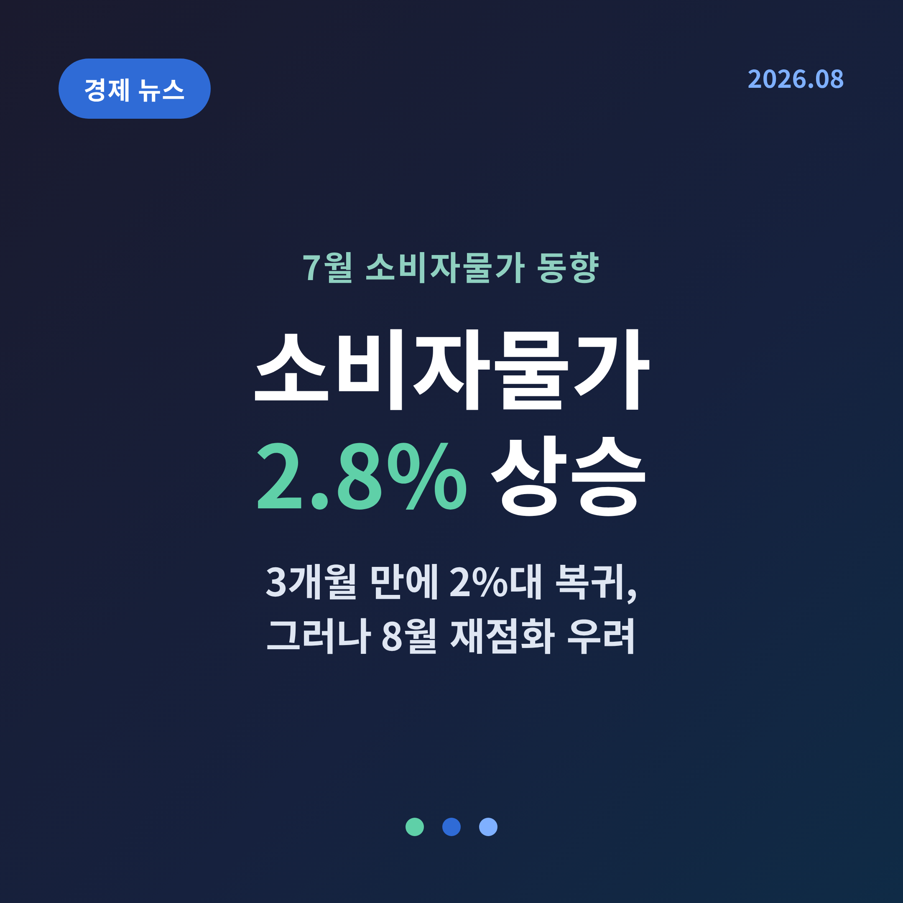
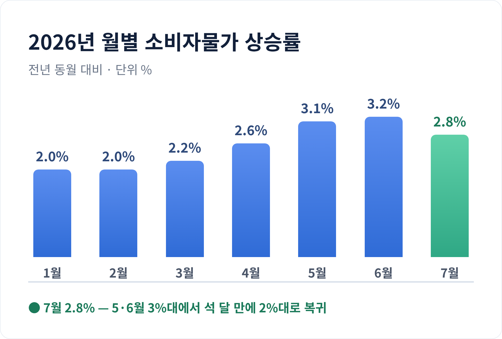
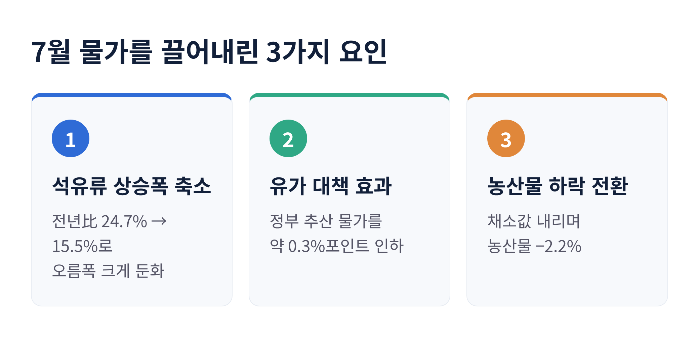
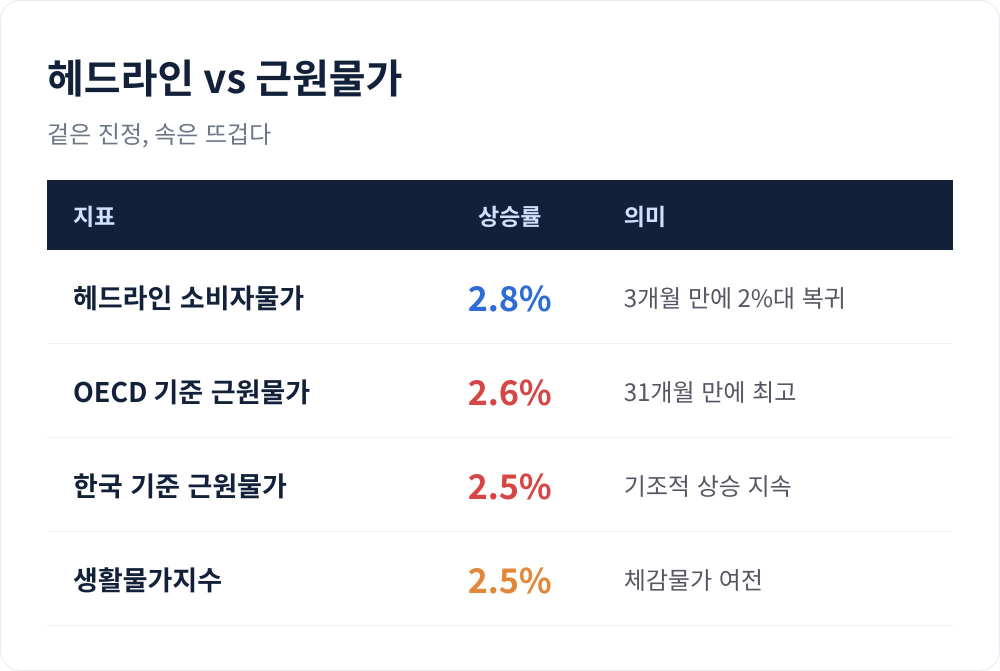
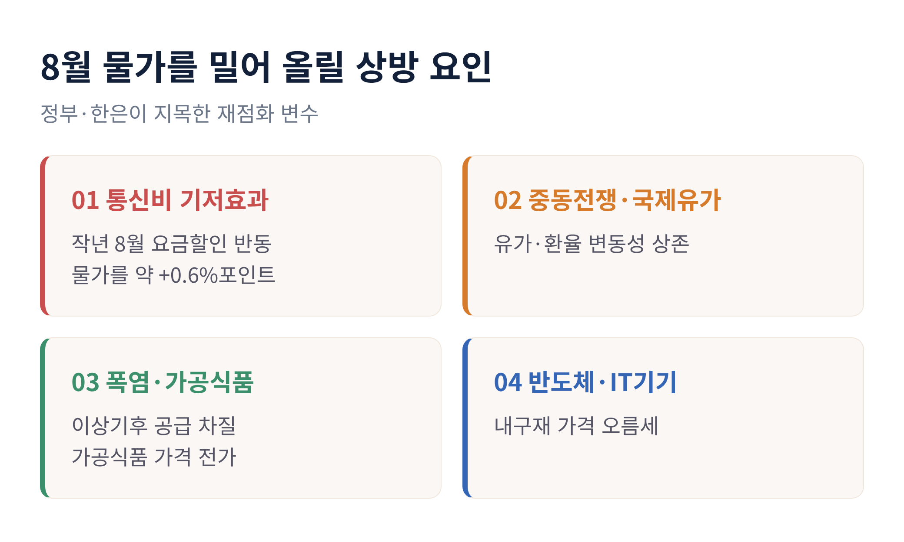
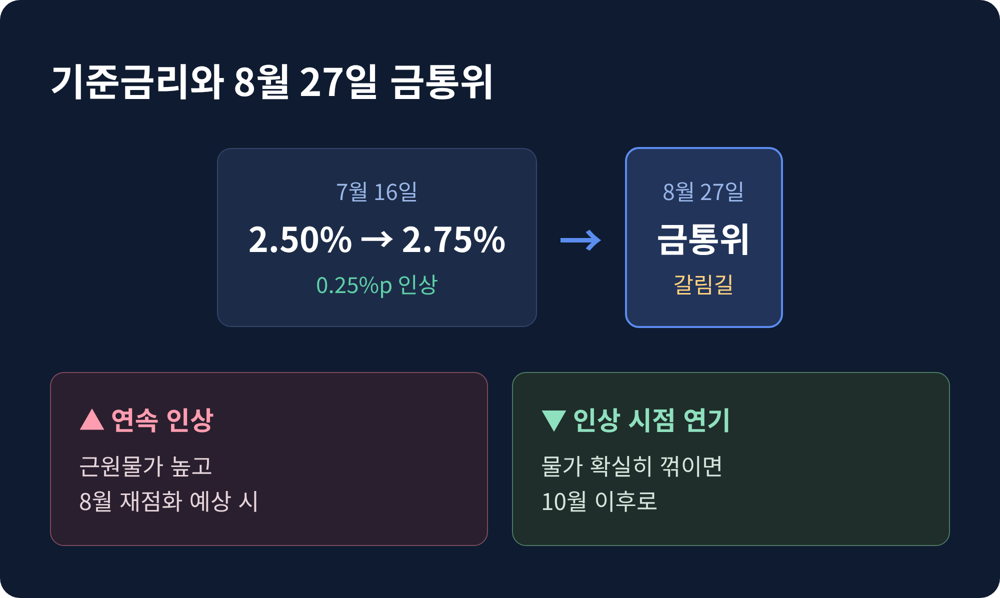
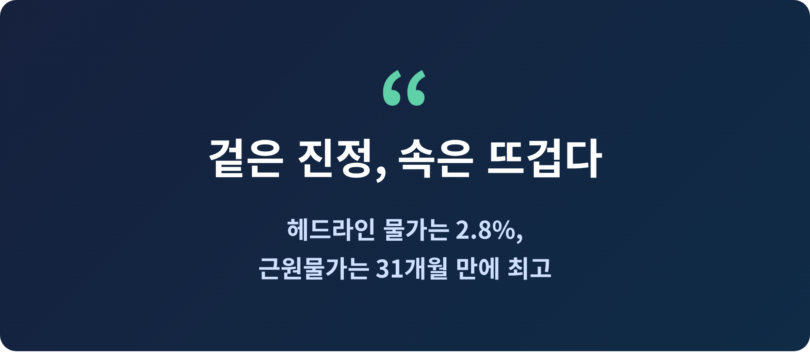

7월 소비자물가가 다시 2%대로 내려왔습니다. 이번 글에서는 물가가 왜 꺾였는지, 그런데도 왜 마음을 놓기 어려운지, 그리고 8월 이후 물가와 금리는 어디로 향할지 정리해 보겠습니다.
먼저 결론부터 말씀드립니다. 헤드라인 숫자는 진정됐지만, 속을 들여다보면 오히려 뜨거워졌습니다.

국가데이터처가 8월 4일 발표한 '2026년 7월 소비자물가동향'에 따르면, 7월 소비자물가지수는 119.77로 지난해 같은 달보다 2.8% 올랐습니다.
숫자만 보면 평범해 보입니다. 하지만 흐름을 놓고 보면 의미가 다릅니다.
올해 물가는 1월과 2월 2.0%로 얌전했습니다. 그러다 중동전쟁 여파로 4월 2.6%, 5월 3.1%, 6월 3.2%까지 뛰었습니다. 6월 수치는 2023년 12월 이후 가장 높은 상승률이었습니다.
두 달 연속 3%를 넘어서던 물가가 7월 들어 2.8%로 꺾였습니다. 3개월 만의 2%대 복귀입니다.
물가를 끌어내린 일등 공신은 기름값입니다.
석유류 가격은 7월에도 전년 대비 15.5% 올랐습니다. 여전히 높습니다. 다만 6월의 24.7%와 비교하면 오름폭이 크게 줄었습니다. 경유는 21.5%, 휘발유는 12.6%, 등유는 20.5% 상승했습니다.
국제유가가 진정된 데다, 정부의 유가 대책이 겹쳤습니다. 전국 주유소 휘발유 평균가는 11주 연속 내렸고, 7월 다섯째 주에는 리터당 1869.1원까지 떨어졌습니다.
정부의 셈은 이렇습니다. 재정경제부는 석유 최고가격제가 7월 물가 상승률을 약 0.3%포인트 낮춘 것으로 추산했습니다. 이 조치가 없었다면 7월 물가는 3.1%였을 것이라는 계산입니다.
여기에 유류세 한시 인하도 힘을 보탰습니다. 휘발유는 15%, 경유는 25% 인하율이 유지되면서 리터당 각각 122원, 145원의 가격 인하 효과가 이어졌습니다. 이 조치는 국제유가가 다시 들썩이자 9월 30일까지 연장됐습니다.
농산물도 거들었습니다. 농축수산물은 0.9% 상승에 그쳐 6월(3.2%)보다 크게 둔화했고, 채소값이 내리면서 농산물은 -2.2%로 하락 전환했습니다. 배추는 18.4%, 시금치는 21.3%, 무는 10.8% 떨어졌습니다. 물가 상승에 대한 농축수산물의 기여도도 0.24%포인트에서 0.07%포인트로 뚝 낮아졌습니다.
다만 밥상 물가 전부가 내린 것은 아닙니다. 쌀은 7.9%, 달걀은 7.5%, 국산쇠고기는 5.7%, 파는 18.3% 올랐습니다. 채소는 내렸지만 자주 사는 먹거리 일부는 여전히 부담이 컸습니다.

여기까지만 보면 물가가 순조롭게 잡히는 듯합니다. 문제는 속살입니다.
기름값처럼 출렁이는 품목을 뺀 근원물가가 오히려 뛰었습니다. OECD 기준 근원물가는 2.6% 올라 2023년 12월 이후 31개월 만에 가장 높았습니다. 한국 기준 근원물가도 2.5% 상승했습니다.
헤드라인 물가는 기름값 덕에 내렸지만, 밑바닥에 깔린 물가 압력은 더 단단해졌다는 뜻입니다.
품목을 뜯어보면 이유가 보입니다. 반도체값이 오르면서 컴퓨터가 25.1%, 휴대용 멀티미디어기기가 22.5% 뛰었습니다. 내구재 전체로도 3.9% 올라 전달보다 상승폭이 확대됐습니다. 개인서비스도 3.5% 올라, 해외단체여행비 20.0%, 국제항공료 21.7%, 보험서비스료 13.4%로 상승세가 이어졌습니다. 외식은 2.6%, 외식을 뺀 개인서비스는 4.1% 상승했습니다.
체감으로 이어지는 생활물가지수도 2.5% 올랐습니다. 신선식품지수만 2.3% 내렸을 뿐입니다.
근원물가가 왜 중요할까요. 기름값이나 채소값은 계절과 국제 정세에 따라 오르내립니다. 반면 서비스와 공산품 가격은 한 번 오르면 잘 내려오지 않습니다. 그래서 근원물가는 물가의 '기초 체온'으로 불립니다. 그 체온이 31개월 만에 가장 높다는 것은, 물가를 다시 끌어내리기가 그만큼 더뎌질 수 있다는 신호입니다.
예전엔 기름값이 물가를 흔드는 주범이었습니다. 지금은 서비스와 내구재가 조용히, 그러나 끈질기게 물가를 밀어 올리고 있습니다.

정부와 한국은행 모두 8월을 걱정합니다.
가장 큰 변수는 기저효과입니다. 지난해 8월 SK텔레콤이 해킹 사고 보상으로 한 달간 휴대전화 요금을 할인했습니다. 그 기저가 올해 8월 통신비 상승률을 끌어올려, 소비자물가를 약 0.6%포인트 밀어 올릴 것으로 정부는 내다봤습니다.
상방 요인은 이뿐이 아닙니다. 중동전쟁발 국제유가와 환율의 변동성이 여전합니다. 폭염 같은 이상기후가 농산물 공급을 흔들면 그 부담이 가공식품 가격으로 옮겨 갈 수 있습니다. 반도체발 IT기기 가격도 계속 오름세입니다.
이형일 재정경제부 1차관은 "중동전쟁 불확실성과 통신비 기저효과, 폭염 등 이상기후, 식품 가격 등 물가 상방리스크가 상존한다"며 전 부처에 대응을 당부했습니다. 정부는 추석을 앞두고 성수품 물가안정과 취약계층 부담 완화를 담은 '추석 민생안정 대책'을 9월 발표할 예정입니다.
7월의 2%대는 안심의 신호라기보다, 잠깐의 숨 고르기에 가깝습니다.

물가는 곧 금리 이야기로 이어집니다.
한국은행 금융통화위원회는 7월 16일 기준금리를 연 2.50%에서 2.75%로 0.25%포인트 올렸습니다. 중동전쟁 이후 이어진 물가 오름세에 대응한 결정이었습니다. 신현송 한은 총재는 추가 인상 가능성도 열어 뒀습니다.
시선은 8월 27일 금통위로 쏠립니다.
셈법은 간단하지 않습니다. 헤드라인 물가가 2%대로 내렸으니 숨을 고를 명분은 생겼습니다. 그러나 근원물가가 높고 8월 재점화가 예상되는 만큼, 두 달 연속 인상에 나설 가능성도 열려 있습니다. 물가가 확실히 꺾인다면 인상 시점을 10월 이후로 늦출 여지도 있습니다.
한 번의 물가 발표가 금리의 방향을 가르는 순간입니다.

정리하면 이렇습니다.
7월 물가는 기름값 덕에 2%대로 내려왔지만, 근원물가는 오히려 31개월 만에 가장 높았습니다. 겉은 진정됐고, 속은 뜨겁습니다. 8월에는 통신비 기저효과와 여러 상방 요인이 겹쳐 다시 3%에 다가설 수 있습니다.
장바구니의 체감은 발표된 수치보다 늦게 움직입니다. 8월 물가와 금통위의 선택을, 조금 더 차분히 지켜봐도 좋겠습니다.
